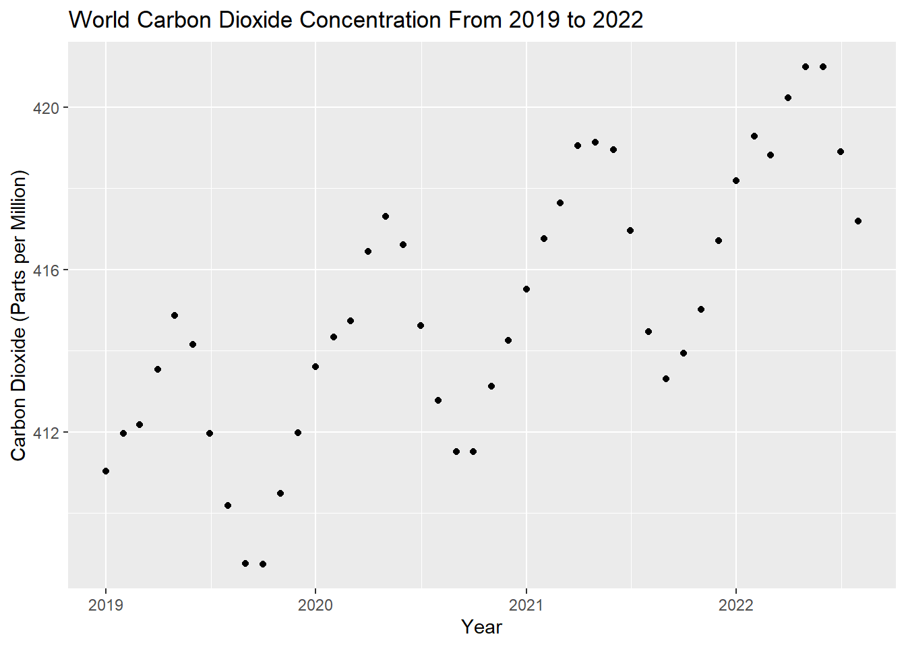
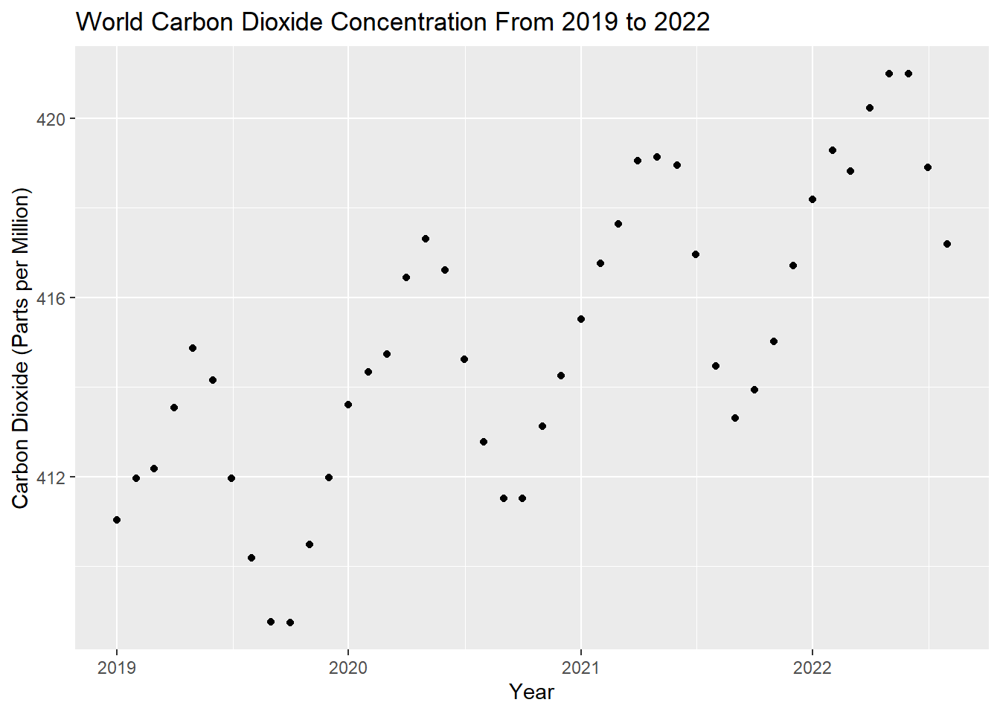
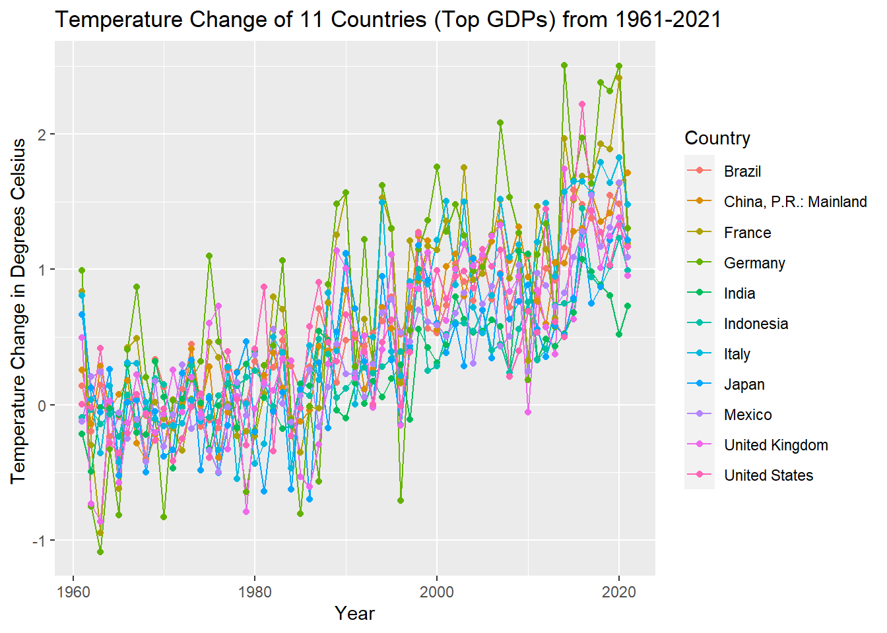
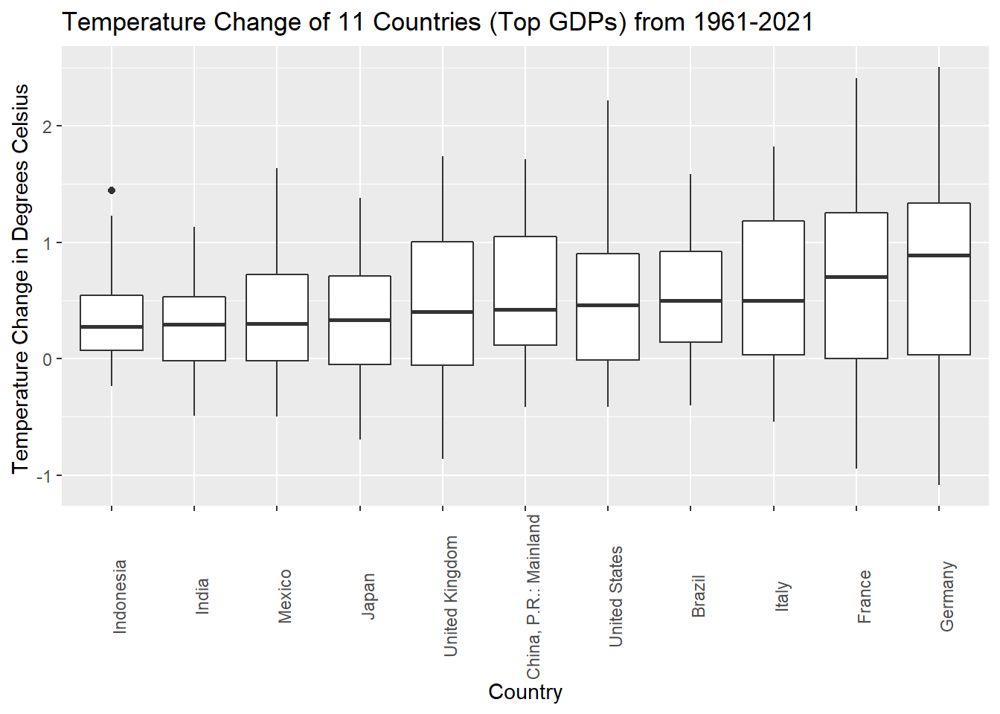
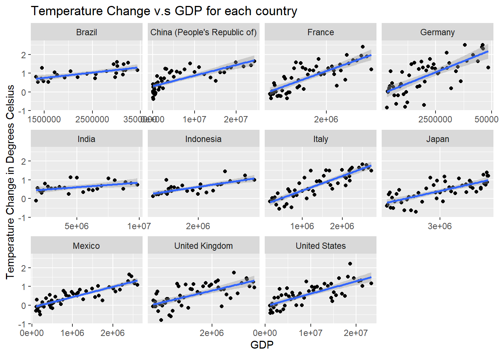
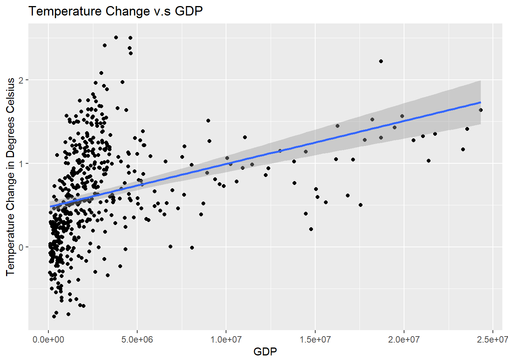
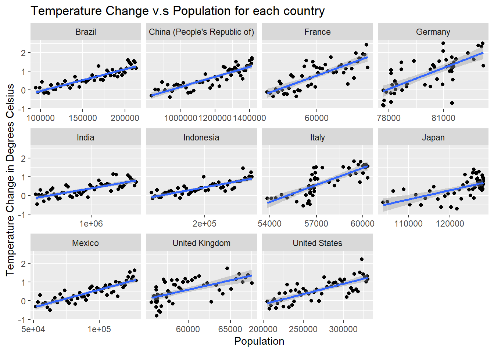
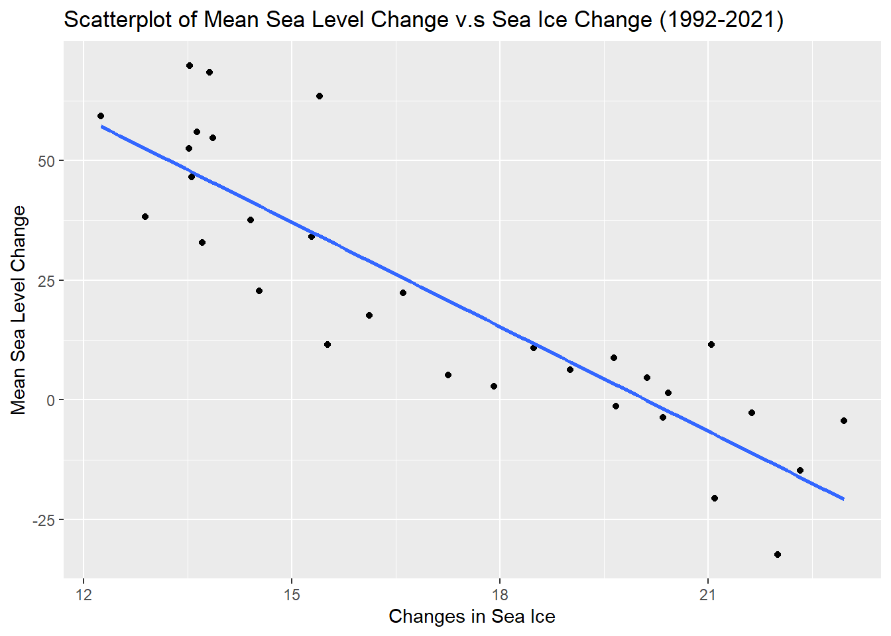

Chapter 4 Results
4.1 Examine the GDP of the project countries from 1970 to 2021
From the GDP dataset, we found that the top ten countries which have the highest GDP in 2021 (in USD, current prices, current PPPs) are: USA, India, Japan, Germany, Indonesia, France, Brazil, UK, Italy, Mexico. The dataset doesn’t contain China’s GDP value in 2021 (but does contain from 1970-2020); this is not reflected as a null value in the dataset. Since China’s GDP is also among the highest in the world before, we decided to include 11 countries: USA, India, Japan, Germany, Indonesia, France, Brazil, UK, Italy, Mexico, and China in our future analysis.
 From the plot, we can see that China and US’s GDP are much higher than other countries from 2010 to present. China’s GDP is relatively low before 1990, but it grows rapidly and exceeds US’s GDP from 2017 until present. India’s GDP is also growing rapidly in recent years. Other countries’ GDP are growing steadily.
From the plot, we can see that China and US’s GDP are much higher than other countries from 2010 to present. China’s GDP is relatively low before 1990, but it grows rapidly and exceeds US’s GDP from 2017 until present. India’s GDP is also growing rapidly in recent years. Other countries’ GDP are growing steadily.
4.2 Population of the project countries from 1970 to 2021
 China and India are the top 2 countries which have highest population and population growth rate from 1970 to 2021. China has about 1.42 billion people and India has 1.41 billion in 2021. US, Indonesia, and Brazil ranks the 3rd, 4th, and 5th by population. Other countries’ population grows steadily.
China and India are the top 2 countries which have highest population and population growth rate from 1970 to 2021. China has about 1.42 billion people and India has 1.41 billion in 2021. US, Indonesia, and Brazil ranks the 3rd, 4th, and 5th by population. Other countries’ population grows steadily.
4.3 Air Pollution from 2021 to 2021


There is a jump in India’s PM2.5 concentration before and after 2017, and the data is missing before 2016. It is reasonable that the data are inconsistent since the dataset is combined from two datasets. The data from other countries are consistent. From the IQAir website, the PM2.5 concentration from 0-5 μg/m3 meets WHO guidelines. We can see that China is the most polluted country before 2017, but the air pollution index continues decreasing and in 2021, China’s PM2.5 index is 32.6 μg/m3. India and Indonesia are the top 2 most polluted countries in 2021, with PM2.5 concentration 58.1 and 34.3 μg/m3. Other countries have relatively low air pollution.
Our analysis of this graph focus on the impact of Covid-19 on air pollution. Since during the pandemic, there are less outside activities. We compare the data before and after 2019 and see if there is a decreasing trend after Covid-19, as we expected. China and Indonesia’s air pollution value decrease rapidly; Brazil, Italy, Japan, and Mexico have a slight decrease; France, Germany, UK are steady; India and US’s air pollution value increase. The trend and the impact of Covid-19 are different for each country. Air pollution values are affected by multiple factors.
4.4 Carbon dioxide concentrations from 1958 to 2022
 

One of the most indicative measurements to showcase Earth’s gradually changing climate is the concentration of carbon dioxide (taken at Mauna Loa, Hawaii). Since 1958, Mauna Loa was chosen as a long term monitoring site, due to its lack of vegetation and remote location far from other continents. As shown in the graphs above, the carbon dioxide concentration in the atmosphere has increased from around 313 parts per million in 1958 to over 420 parts per million in 2022. This increase can be attributed to the release of fossil fuels in the atmosphere, which has accelerated since the industrial revolution, and is one of contributors to global warming. In addition to the general pattern of increase exhibited by the graph on the left, the graph on the right displays the seasonality of carbon dioxide data. This curve (known as the Keeling Curve) shows a cyclic variation of about 6 ppm each calendar year, with a peak in May and a minimum in September. The variation is due to the uptake of carbon dioxide by the world’s land vegetation; from the maximum in May, the concentration decreases as new plant growth during Northern hemisphere’s spring and summer absorbs carbon dioxide through Photosynthesis.
This set of graphs also allows us to preface the analysis of this project - since climate data is inherently “noisy” and oftentimes seasonal, it is important to keep that in mind as you read through the document, as some patterns or conclusions may not be as definitive as we would have liked. Nonetheless, we do hope that this project serves it educational purpose on the factors that may affect climate change.
4.5 The temperature change of the project countries from 1961 to 2021

In recent years, the world has seen a significant increase in temperature change. This trend is largely attributed to human activity and the resulting increase in greenhouse gas emissions. These emissions trap heat in the atmosphere, leading to a phenomenon known as global warming .From the first time series line/dot plot, we see that although there are some expected seasonal trends year to year, all 11 of the countries undoubtedly increased in temperature change in 2021, compared to 1960. This is certainly an indication that change needs to happen. Thus, it is important that actions are taken to reduce greenhouse gas emissions and mitigate the effects of global warming. This may include reducing our reliance on fossil fuels, increasing the use of renewable energy sources, and adopting more sustainable practices in our daily lives.
The second plot is a boxplot representation of the same data, where each of the boxplots represents the time series data for that particular country. One important feature to note about all of these boxplots is that the median are all above 0, which corroborates the trend observed in the previous time series plot. In conclusion, the combination of both of these plots shows the undeniable truth that Earth’s atmosphere is gradually heating up, and is yet another indication of climate change.
4.6 The mean sea level change of 24 regions from 1992 to 2021

Rising sea levels are one of the most significant impacts of global warming. As the temperature of the Earth increases, the oceans absorb a large amount of the excess heat, leading to the thermal expansion of seawater. This causes the volume of the oceans to increase, leading to a rise in sea levels. In addition, the melting of glaciers and ice caps, particularly in polar regions, also contributes to the rise in sea levels (a relationship we will revisit soon in this project). Looking at the first time series plot, it can be observed that from 1991 to 2021, there is an increase in sea level change in all of the regions represented above (including the “world” measurement as a whole). There are certainly noise and seasonality in the data, a very clear increase can be observed.
4.7 Changes in greenhouse gas concentrations of the project countries from 1990 to 2019

Since the 20th century, the greenhouse gases produced by human activity have been the major cause of climate change. The excess of greenhouse gases in the atmosphere would disrupt the earth’s carbon cycle and also hasten global warming. These 11 countries account for around 60% of global greenhouse gas emissions, whereas the 100 lowest emitters only contributed about 3%. From this plot, we can see that the greenhouse gas emissions from China and United States are much higher than other countries, and China had a huge jump throughout these years while other countries remain steadily. We know that the majority of the world’s greenhouse gas emissions comes from transportation, electricity generation, agriculture and other forms of energy use. United States is the word’s largest economy throughout years. This results in the greenhouse gas emissions of United States is higher than other developed and developing countries from 1990-2019 but within a relatively steady range. On the other hand, the greenhouse gas emissions from China keeps increasing and reaches the highest level in 2019. This increase can be attributed to the economy development happened in China. China’s economy has grown to one of the largest and most powerful in the world over the past few decades. The extraordinary urbanization boom in China has accelerated greenhouse gas emissions. Cement and steel production, which have fueled China’s infrastructure development, both emit significant amounts of CO2 during the refining process.

From the graph above, we can see that most developed countries are decreasing their greenhouse gas emission, while developing countries tends to have a continuous increasing. There are two unusual behaviors in Brazil and Japan. In 2010, the greenhouse gas emmision of Brazil has a sharp drop. The greenhouse gas emission of Japan has dropped from 2007 and reached the lowest in 2009. After 2009, it has a rapid increasing until 2013. This can be attributed to the economy crisis happened in 2008 and 2009. During that period of time, the Japanese economy shrunk and the Tokyo stock market crashed. The GDP of Japan only grew around 1%. Due to the economy crisis, the greenhouse gas emission of Japan dropped hard.
4.9 Changes in the agricultural area of the project countries from 1990 to 2019

From our analysis to greenhouse gases, in 2010, the greenhouse gas emission of Brazil has a sharp drop. This may attribute to the changes in forest land and agricultural area in Brazil. Brazil has the world’s largest remaining tropical forest, accounting for roughly one-third of all remaining rain forests. The major sources of Brazil’s greenhouse gas emission are land-use change and the agriculture. From the graph of changes in forest area, we can tell that from 2010, the rate of deforestation in Brazil has continued to fall However, even thought Brazil succeed in reducing deforestation, the emissions from agriculture and other industries are rising. Based on the graph of changes in agricultural area, we see that land used for agriculture is increasing a lot. This might attribute to the continuous increasing in greenhouse gases after the sharp drop. Besides, based on the two graphs above, we can tell that afforestation is talking place in most countries to balance their greenhouse emissions.
4.10 What is the relationship between the GDP and temperature change of a country?

The graphs above were generated by merging the temperature change data set with the GDP data set, each of the data points represents the pair of values (GDP, temperature change) of each country associated with a given year. Before even conducting the analysis, logic informs us that there should be a positive relationship between the GDP and mean temperature change of a country, since a higher GDP typically relates to more production power, more technological advancements, more fossil fuel burning, and a higher output of global warming inducing gases. However, on the other hand, one could make an argument that countries with a higher GDP have better resources for combating and mitigating temperature regulation.
Referring back to the individual GDP analysis above, China and the United State’s GDP are magnitudes higher than the other countries’, therefore, to make the graph readable, a scale of “free_x” was used. The resulting faceted graph shows quite a clear relationship between GDP and temperature: as the GDP of a country increases, the mean temperature change also increases. This aligns with the initial logic outlined above. Furthermore, while some countries’ (Brazil and Indonesia) may not exhibit a high slope like the others (France, Italy, US), there is still a relatively strong positive relationship. Therefore, with a degree of confidence, our group concludes that there is a positive correlation between the GDP and temperature change of a country (exhibited with the data we collected, cleaned, and transformed). However, like I prefaced in the beginning of this project, climate data is inherently noisy, and incredibly dynamic; so it is entirely possible we may have missed some confounding variable that is contributing to this correlation.
4.11 What is the relationship between the population and the temperature change of a country?

Similar with the temperature change v.s GDP plot above, this graph was also generated by merging the respective data sets. Each of the data points from the faceted graph above represents the pair of values (population, temperature change) of each country associated with a given year. Before even conducting the analysis, we hypothesized that there would be a positive relationship between the population and the temperature change of a country. This initial guess aligns perfectly well with logic, now let us see if our data supports this.
Referring back to the individual population analysis above, it can be observed that China and India have populations that are magnitudes higher than all of the other countries, so again, in order to make our graphs readable, a scale of “free_x” is used. The resulting faceted graph shows quite a clear positive relationship for all 11 of the countries. One can even make an argument that the correlation is stronger in this graph than the previous one of GDP v.s temperature change. Our gathered data and analysis supports the conclusion that there is a semi-strong positive correlation between the population and the temperature change of a country.
4.12 What is the relationship between mean sea level change and the sea ice concentration of the world?

As we have mentioned earlier in this project, the relationship of sea ice volume and sea level change will be explored. The relationship between sea level change and sea ice volume is complex and not fully understood; however, one factor that is known to play a role is the melting of glaciers and ice caps, which can contribute to a rise in sea levels. As sea ice melts, it adds more water to the oceans, which can cause sea levels to rise. From the first pair of plots, we are able to observe an increase in the sea level change, while during the same time frame, the sea ice volume is decreasing. Therefore, to observe the trend further, we created a scatterplot of these values merged together on the same year. From the scatterplot, there is clear negative correlation between these two features (we will never conclude causality), as sea ice volume decreases, the sea level rises. The extent that sea ice actually contributes to sea level rise is extremely difficult to quantify, as the climate system is so dynamic. But nevertheless, from these graphs, a clear relationship can be observed.